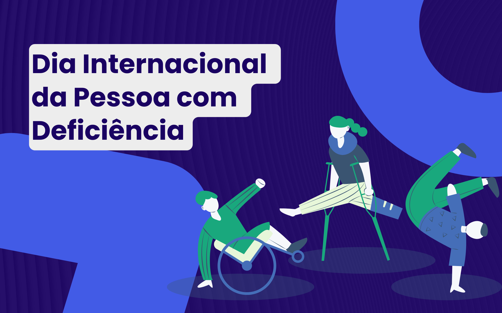

Como tudo começou
O Dia Internacional da Pessoa com Deficiência foi proclamado pela Assembleia Geral das Nações Unidas em 1992, com o objetivo de promover a compreensão das questões que afetam as pessoas com deficiência. A data foi criada para aumentar a conscientização sobre os direitos das pessoas com deficiência e promover a inclusão em todos os aspectos da sociedade, como acessibilidade, educação, saúde e trabalho.
Em 3 de dezembro de 1992, o primeiro Dia Internacional da Pessoa com Deficiência foi comemorado em vários países, com a participação de organizações de pessoas com deficiência, ativistas e governos locais. Desde então, a data tem sido uma oportunidade anual para sensibilizar as pessoas sobre as questões enfrentadas pelas pessoas com deficiência, incentivando um mundo mais inclusivo e acessível.
